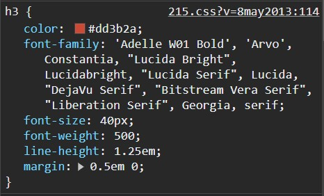

Opdracht 1
- Siblings van het <ul> element zijn <h1> en <p>.
- Ancestors van het tweede <li> element zijn <ul>, <body>, en <HTML>.
- Descendants van het <body> element zijn <h1>, <p>, <ul>, en de drie <li> elementen.
- In een geldig HTML-document heeft elk element een ouder, behalve het root-element, meestal het <HTML> element.
- Elk HTML-element kan nul, één of meerdere child elementen hebben, afhankelijk van de documentstructuur.
Opdracht 3
- Vrt.be: gebruikt 2 link css / 13 interne style blokken / geen style inline.
- Miras.be: gebruikt 5 link css / 16 intern style blokken / 1 style inline.
- Vives.be: gebruit 4 link css / 11 style blokken / 4 style inline.
Opdracht 4
Geen verchill omdat alles die groter en veranderd word door css gedaan en veranderd de pagina bron niet css.
Opdracht 5
Opdracht 7
H1 is groter dan H2 omdat "2ex" verwijst naar letterhoogte en "2em" naar de lettergrootte van het element zelf.